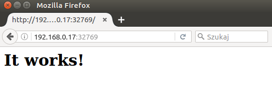

## Srodowiska i narzedzia wytwarzania oprogramowania - wyklad 7 <img src="./Docker-logo.png" width="400"> --- #### Architektura Dockera --- #### Konteneryzacja serwera Apache ```bash docker search httpd NAME DESCRIPTION STARS OFFICIAL AUTOMATED httpd The Apache HTTP Server Project 815 [OK] centos/httpd 10 [OK] ... ``` ```bash docker pull httpd Using default tag: latest latest: Pulling from library/httpd 386a066cd84a: Already exists a11d6b8e2fac: Pull complete ... f02435546328: Pull complete Digest: sha256:10fd24b8d20ffd15cb21d49529be5952d828ba3f269564cc8ebe60053293ceba Status: Downloaded newer image for httpd:latest ``` ```bash docker images REPOSITORY TAG IMAGE ID CREATED SIZE httpd latest ff3a8919cd88 4 days ago 175.3 MB tjel/ubuntu-nodejs-nano latest cba321242ee4 13 days ago 216.8 MB ... ``` --- #### Konteneryzacja serwera Apache ```bash docker run -d --name MyWebServer -P httpd ff25c214d301eb5759d61d4140e333736f7a76744b4f2f57feb69af4aa402d01 ``` ```bash docker ps CONTAINER ID IMAGE COMMAND CREATED STATUS ff25c214d301 httpd "httpd-foreground" 33 seconds ago Up 30 seconds PORTS NAMES 0.0.0.0:32769->80/tcp MyWebServer ``` ```bash docker stop MyWebServer MyWebServer ``` ```bash docker ps CONTAINER ID IMAGE COMMAND CREATED STATUS PORTS NAMES ``` ```bash docker start MyWebServer MyWebServer ``` --- #### Mapowanie portow kontenera ```bash cat Dockerfile ... EXPOSE 80 CMD httpd-foreground ``` ```bash docker port MyWebServer 80/tcp -> 0.0.0.0:32769 ``` ```bash ifconfig docker0 Link encap:Ethernet HWaddr 02:42:15:a4:d5:fc inet addr:172.17.0.1 Bcast:0.0.0.0 Mask:255.255.0.0 inet6 addr: fe80::42:15ff:fea4:d5fc/64 Scope:Link ... wlan0 Link encap:Ethernet HWaddr b0:10:41:8f:80:4d inet addr:192.168.0.17 Bcast:192.168.0.255 Mask:255.255.255.0 inet6 addr: fe80::b210:41ff:fe8f:804d/64 Scope:Link ```  --- #### Mapowanie portow kontenera ```bash -p HostPort:ContainerPort ``` ```bash docker stop MyWebServer MyWebServer ``` ```bash docker rm MyWebServer MyWebServer ``` ```bash docker run -d --name MyWebServer -p 8080:80 httpd 3d1629800248e434c7ff0d6e146014a8aabbb67653b60f74e9c624ddff9a0d85 ``` <img src="./apache-printscreen-8080.png" width="600"> --- #### Wspoldzielenie zasobow dyskowych - montowanie dysku ```bash docker run -it -v /data --name container1 busybox Unable to find image 'busybox:latest' locally latest: Pulling from library/busybox 56bec22e3559: Pull complete Digest: sha256:29f5d56d12684887bdfa50dcd29fc31eea4aaf4ad3bec43daf19026a7ce69912 Status: Downloaded newer image for busybox:latest / # ls bin data dev etc home proc root sys tmp usr var / # cd data /data # touch file1.txt /data # ls file1.txt /data # exit ``` ```bash docker inspect container1 ... "Mounts": [ { "Name": "5336aee6ac32026b17fe34a1b7b8a82ddc6ce0ade1b7984bfc86fe323f6c5d60", "Source": "/var/lib/docker/volumes/5336aee6ac32026b17fe34a1b7b8a82ddc6ce0ade1b7984bfc86fe323f6c5d60/_data", "Destination": "/data", "Driver": "local", "Mode": "", "RW": true, "Propagation": "" } ], ... ``` --- #### Wspoldzielenie zasobow dyskowych - montowanie dysku ```bash sudo ls /var/lib/docker/volumes/\ 5336aee6ac32026b17fe34a1b7b8a82ddc6ce0ade1b7984bfc86fe323f6c5d60/_data file1.txt ``` ```bash docker restart container1 container1 docker attach container1 / # ls bin data dev etc home proc root sys tmp usr var / # cd data /data # ls file1.txt /data # exit ``` ```bash docker rm container1 container1 sudo ls /var/lib/docker/volumes/\ 5336aee6ac32026b17fe34a1b7b8a82ddc6ce0ade1b7984bfc86fe323f6c5d60/_data file1.txt ``` ```bash docker rm --help Usage: docker rm [OPTIONS] CONTAINER [CONTAINER...] ... -v, --volumes=false Remove the volumes associated with the container ``` --- #### Montowanie katalogu hosta w kontenerze ```bash -v HostFolder:ContainerVolumeName ``` ```bash ls ~/docker/shared shared-test-1.txt ``` ```bash docker run -it --name container1 -v ~/docker/shared:/shared busybox / # ls bin dev etc home proc root shared sys tmp usr var / # cd shared shared-test-1.txt ``` --- #### Wspoldzielenie zasobow pomiedzy kontenerami ```bash ocker run -it -v /data --name container3 busybox / # cd data /data # ls /data # touch file1.txt /data # touch file2.txt /data # touch file2.txt ``` ```bash docker ps CONTAINER ID IMAGE COMMAND CREATED STATUS PORTS NAMES 9e4fcfd8eae6 busybox "sh" 2 minutes ago Up 2 minutes container3 ``` ```bash docker exec container3 ls /data file1.txt file2.txt ``` ```bash docker run -it --volumes-from container3 --name container4 busybox / # ls bin data dev etc home proc root sys tmp usr var / # cd data /data # ls file1.txt file2.txt ``` --- #### Komunikacja pomiedzy kontenerami - Redis NoSQL ```bash docker pull redis Using default tag: latest latest: Pulling from library/redis 386a066cd84a: Already exists ... 7ea61cb6ec2a: Pull complete Digest: sha256:54057dd7e125ca41afe526a877e8bd35ec2cdd33b9217e022ed37bdcf7d09673 Status: Downloaded newer image for redis:latest ``` ```bash docker run -d --name redis1 redis 72a2e195e02be604ee118002f68cfd02aa684cce8fe1bf6de0adcec6f326f67d ``` ```bash docker ps CONTAINER ID IMAGE COMMAND CREATED STATUS PORTS NAMES 72a2e195e02b redis "docker-entrypoint.sh" 23 seconds ago Up 21 seconds 6379/tcp ``` --- #### Komunikacja pomiedzy kontenerami - Redis NoSQL ```bash --link source:alias ``` ```bash docker run -it --link redis1:redis --name redisclient1 busybox / # cat /etc/hosts 127.0.0.1 localhost ... 172.17.0.3 redis 72a2e195e02b redis1 172.17.0.4 8a1e835e5998 ``` ```bash / # ping redis PING redis (172.17.0.3): 56 data bytes 64 bytes from 172.17.0.3: seq=0 ttl=64 time=0.637 ms ``` ```bash / # set ... REDIS_ENV_REDIS_VERSION='3.2.6' REDIS_NAME='/redisclient1/redis' REDIS_PORT='tcp://172.17.0.3:6379' REDIS_PORT_6379_TCP='tcp://172.17.0.3:6379' REDIS_PORT_6379_TCP_ADDR='172.17.0.3' REDIS_PORT_6379_TCP_PORT='6379' REDIS_PORT_6379_TCP_PROTO='tcp' ... / # exit ``` --- #### Polaczenie klientow z baza danych Redis ```bash docker run -it --link redis1:redis --name client1 redis sh ping redis PING redis (172.17.0.3): 56 data bytes 64 bytes from 172.17.0.3: icmp_seq=0 ttl=64 time=0.205 ms 64 bytes from 172.17.0.3: icmp_seq=1 ttl=64 time=0.348 ms redis-cli -h redis redis:6379> PING PONG redis:6379> set myvar DOCKER OK redis:6379> get myvar "DOCKER" redis:6379> ``` ```bash docker run -it --link redis1:redis --name client2 redis sh redis-cli -h redis redis:6379> get myvar "DOCKER" redis:6379> ``` Bardziej zaawansowane rozwiazanie: [Docker Compose](https://docs.docker.com/compose/) --- #### Zarzadzanie kontenerami poprzez kod - Dockerfile ```bash mkdir -p ~/docker/images/busybox-test-1 nano Dockerfile FROM busybox:latest MAINTAINER tjel (tomek.jelinski@gmail.com) ``` ```bash docker build -t myimage:latest . Sending build context to Docker daemon 2.048 kB Step 1 : FROM busybox:latest ---> e02e811dd08f Step 2 : MAINTAINER tjel (tomek.jelinski@gmail.com) ---> Running in f442145501ff ---> d385ec3b5b7c Removing intermediate container f442145501ff Successfully built d385ec3b5b7c ``` ```bash docker images REPOSITORY TAG IMAGE ID CREATED SIZE busybox-test-1 latest d385ec3b5b7c About a minute ago 1.093 MB ``` ```bash docker run -it busybox-test-1 / # ``` --- #### Zarzadzanie kontenerami poprzez kod - Dockerfile ```bash nano Dockerfile FROM busybox:latest MAINTAINER tjel (tomek.jelinski@gmail.com) CMD ["date"] ``` ```bash docker build -t myimage:latest . Sending build context to Docker daemon 2.048 kB Step 1 : FROM busybox:latest ---> e02e811dd08f Step 2 : MAINTAINER tjel (tomek.jelinski@gmail.com) ---> Using cache ---> d385ec3b5b7c Step 3 : CMD date ---> Running in 6742cc694e5a ---> 9683e76ddcdb Removing intermediate container 6742cc694e5a Successfully built 9683e76ddcdb ``` ```bash docker run -it busybox-test-1 Sun Dec 11 23:46:37 UTC 2016 ``` ```bash docker run -it busybox-test-1 /bin/sh ``` --- #### Zarzadzanie kontenerami poprzez kod - Dockerfile ```bash CMD ["executable","param1","param2"] ``` np. ```bash CMD ["ls","-al"] ``` ```bash docker run -it busybox-test-1 total 44 drwxr-xr-x 18 root root 4096 Dec 11 23:51 . drwxr-xr-x 18 root root 4096 Dec 11 23:51 .. -rwxr-xr-x 1 root root 0 Dec 11 23:51 .dockerenv drwxr-xr-x 2 root root 12288 Oct 7 18:18 bin ... drwxr-xr-x 3 root root 4096 Oct 7 18:18 usr drwxr-xr-x 4 root root 4096 Oct 7 18:18 var ``` --- #### Zarzadzanie kontenerami poprzez kod - Dockerfile ```bash ENTRYPOINT ["default app","param1","param2"] ``` ```bash FROM busybox:latest MAINTAINER tjel (tomek.jelinski@gmail.com) ENTRYPOINT ["/bin/cat"] CMD ["/etc/passwd"] ``` ```bash docker run -it busybox-test-1 root:x:0:0:root:/root:/bin/sh daemon:x:1:1:daemon:/usr/sbin:/bin/false bin:x:2:2:bin:/bin:/bin/false sys:x:3:3:sys:/dev:/bin/false sync:x:4:100:sync:/bin:/bin/sync mail:x:8:8:mail:/var/spool/mail:/bin/false www-data:x:33:33:www-data:/var/www:/bin/false operator:x:37:37:Operator:/var:/bin/false nobody:x:99:99:nobody:/home:/bin/false ``` ```bash docker run -it busybox-test-1 somefile.txt cat: can't open 'somefile.txt': No such file or directory ``` --- #### Zarzadzanie kontenerami poprzez kod - Dockerfile ```bash FROM ubuntu:latest MAINTAINER tjel (tomek.jelinski@gmail.com) RUN apt-get update RUN apt-get install -y nginx COPY index.html /var/www/html/ ENTRYPOINT ["/usr/sbin/nginx","-g","daemon off;"] EXPOSE 80 ``` ```bash ls ~/docker/images/nginx-test Dockerfile index.html ``` ```bash cat index.html <h1>Hello from Dockerized NGINX!</h1> ``` ```bash docker build -t nginx-test:latest . Sending build context to Docker daemon 3.072 kB Step 1 : FROM ubuntu:latest ---> e4415b714b62 Step 2 : MAINTAINER tjel (tomek.jelinski@gmail.com) ---> Running in 6b4f42ad457b ---> 169351eb4fc9 Removing intermediate container 6b4f42ad457b ``` --- #### Zarzadzanie kontenerami poprzez kod - Dockerfile ```bash Step 3 : RUN apt-get update ---> Running in b0a99fbd748f Get:1 http://archive.ubuntu.com/ubuntu xenial InRelease [247 kB] ... Get:21 http://archive.ubuntu.com/ubuntu xenial-security/universe amd64 Packages Fetched 24.6 MB in 5s (4471 kB/s) Reading package lists... ---> ba98394aca20 Removing intermediate container b0a99fbd748f Step 4 : RUN apt-get install -y nginx ---> Running in 3032dd16a491 Reading package lists... Building dependency tree... Reading state information... The following additional packages will be installed: fontconfig-config fonts-dejavu-core geoip-database libexpat1 libfontconfig1 ... Step 5 : COPY index.html /usr/share/nginx/html/ ---> 130421b08c5b Removing intermediate container 629e3f343daa Step 6 : ENTRYPOINT [“/usr/sbin/nginx”,”-g”,”daemon off;”] ---> Running in 9eb3d93d1ba7 ---> df8750387556 Removing intermediate container 9eb3d93d1ba7 Step 7 : EXPOSE 8080 ---> Running in e69b0e86e8b7 ---> 8bbac1f9b948 Removing intermediate container e69b0e86e8b7 Successfully built 8bbac1f9b948 ``` --- #### Zarzadzanie kontenerami poprzez kod - Dockerfile ```bash docker run -d -P --name nginx-webserver nginx-test ddc141919c727c7c65abf9bdbdaa9a314bdb12537db94e31ff6fa12aed02131b ``` ```bash docker ps CONTAINER ID IMAGE COMMAND CREATED STATUS ddc141919c72 nginx-test "/usr/sbin/nginx -g '" 27 seconds ago Up 25 seconds PORTS NAMES 0.0.0.0:32770->80/tcp nginx-webserver ``` ```bash curl http://192.168.0.13:32771 <h1>Hello from Dockerized NGINX!</h1> ``` --- #### 'Best practices for writing Dockerfiles' - Containers should be ephemeral - Use a .dockerignore file - Run only one process per container - Minimize the number of layers - Build cache - Sort multi-line arguments ```bash RUN apt-get update && apt-get install -y \ bzr \ cvs \ git \ mercurial \ subversion ``` --- #### Ustawienia sieciowe Dockera ```bash ifconfig docker0 Link encap:Ethernet HWaddr 02:42:29:2a:65:4f inet addr:172.17.0.1 Bcast:0.0.0.0 Mask:255.255.0.0 inet6 addr: fe80::42:29ff:fe2a:654f/64 Scope:Link ``` ```bash docker network ls NETWORK ID NAME DRIVER SCOPE 4039687b438d bridge bridge local 7139f9d6c5d9 host host local c07c4930f247 none null local ``` ```bash docker run --network=<NETWORK> ``` ```bash docker attach nonenetcontainer root@0cb243cd1293:/# cat /etc/hosts 127.0.0.1 localhost ::1 localhost ip6-localhost ip6-loopback fe00::0 ip6-localnet ff00::0 ip6-mcastprefix ff02::1 ip6-allnodes ff02::2 ip6-allrouters root@0cb243cd1293:/# ifconfig lo Link encap:Local Loopback inet addr:127.0.0.1 Mask:255.0.0.0 inet6 addr: ::1/128 Scope:Host ``` --- #### Ustawienia sieciowe Dockera ```bash docker network inspect bridge { "Name": "bridge", "Id": "4039687b438d32a937d0a013eb7d920d81c9cd3cc401308a3564e6fc1043f348", ... "Driver": "bridge", "EnableIPv6": false, "IPAM": { ... "Config": [ { "Subnet": "172.17.0.0/16", "Gateway": "172.17.0.1" } ] }, "Internal": false, "Containers": { "324af2c3402cf30f0ccd451d15571b1b33889fc0f797803fb87ef8990c7b9903": { "Name": "angry_yalow", ... "MacAddress": "02:42:ac:11:00:02", "IPv4Address": "172.17.0.2/16", }, "ddc141919c727c7c65abf9bdbdaa9a314bdb12537db94e31ff6fa12aed02131b": { "Name": "nginx-webserver", ... "MacAddress": "02:42:ac:11:00:03", "IPv4Address": "172.17.0.3/16", } }, ... ```